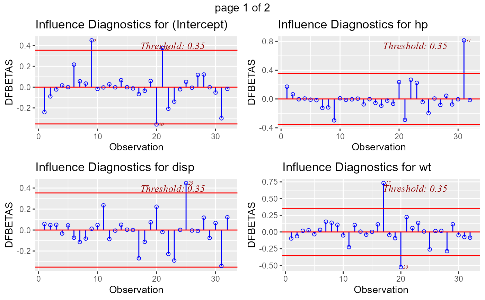

Panel of plots to detect influential observations using DFBETAs.
ols_plot_dfbetas(model, print_plot = TRUE)
| model | An object of class |
|---|---|
| print_plot | logical; if |
list; ols_plot_dfbetas returns a list of tibbles (for intercept and each predictor)
with the observation number and DFBETA of observations that exceed the threshold for classifying
an observation as an outlier/influential observation.
DFBETA measures the difference in each parameter estimate with and without the influential point. There is a DFBETA for each data point i.e if there are n observations and k variables, there will be \(n * k\) DFBETAs. In general, large values of DFBETAS indicate observations that are influential in estimating a given parameter. Belsley, Kuh, and Welsch recommend 2 as a general cutoff value to indicate influential observations and \(2/\sqrt(n)\) as a size-adjusted cutoff.
ols_dfbetas_panel() has been deprecated. Instead use ols_plot_dfbetas().
Belsley, David A.; Kuh, Edwin; Welsh, Roy E. (1980). Regression Diagnostics: Identifying Influential Data and Sources of Collinearity.
Wiley Series in Probability and Mathematical Statistics. New York: John Wiley & Sons. pp. ISBN 0-471-05856-4.
[ols_plot_dffits()]
